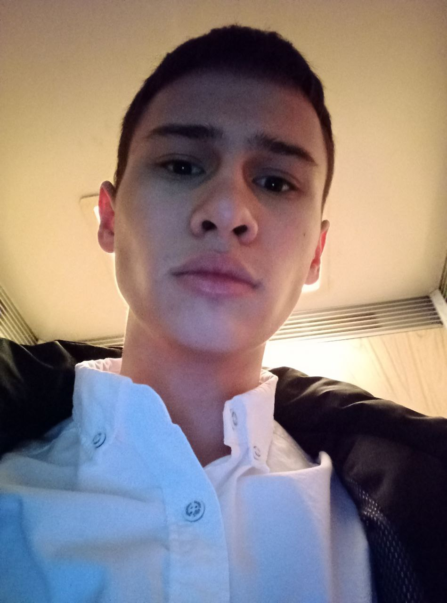

Обо мне

Привет! Меня зовут Сардор. Я программист, специализируюсь на разработке десктопных приложений на C# и мобильных приложений для Android.
Быстро адаптируюсь к новым условиям, легко встраиваюсь в команды и активно участвую в коллективной работе. Мне нравится создавать полезные и качественные решения, которые приносят реальную пользу.
Обладаю высокой обучаемостью, всегда открыт новым технологиям и подходам. Умею грамотно организовать рабочий процесс, не боюсь ответственности и стремлюсь к постоянному профессиональному росту.
Я общительный, инициативный и надёжный. Если вы ищете разработчика, который не просто пишет код, а живёт своим делом — давайте обсудим сотрудничество!